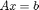

MueMat Toolbox Overview
Contents
Target Problems
The MueMat Toolbox provides a variety of algebraic multigrid (AMG) methods for the solution of linear systems . Theoretically, these methods are appropropriate for symmetric positive definite linear systems arising from self-adjoint elliptic partial differential equations (PDEs). However, these methods can also be applied to other linear systems, e.g., those arising parabolic PDEs such as the convection-diffusion equations. It may be possible to apply the AMG solvers in MueMat to semi-definite linear systems, as long as the right hand side and initial guess are in the range space of the matrix.
Implemented Multigrid Algorithms
MueMat has implementations of smoothed aggregation AMG and a constrained energy-minimizing AMG method. The latter method is appropriate for linear systems arising from systems of PDEs where the number of near-kernel components is greater than the number of degrees of freedom per node.
MueMat does not contain any geometric multigrid or classic (aka Ruge-Stueben) AMG methods.
Smoothers
MueMat provides point and block versions of Jacobi, Gauss-Seidel, and symmetric Gauss-Seidel smoothers. MueMat also implements a Chebyshev polynomial smoother.
Extensibility
MueMat is designed for researching and developing new algorithms and to provide straight-forward extensibility. Thus, one could implement new geometric or algebraic methods and integrate them easily into the existing project.
Advanced Usage
One can create hybrid methods that combine two or more multigrid methods. For example, one could create a preconditioner that is a two-level geometric multigrid method followed by an energy-minimization multigrid method.
It is possible to access some parts of the Trilinos package ML via the mlmex interface. (Please see the ML User's Guide for instructions on how to compile mlmex.)